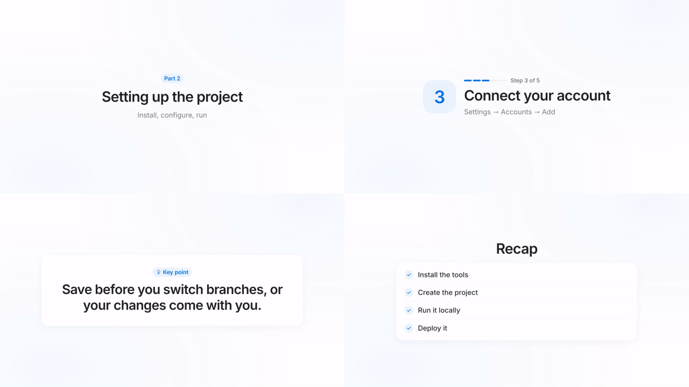
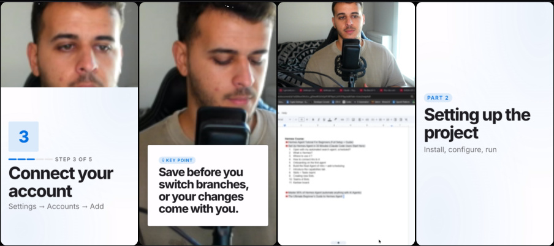
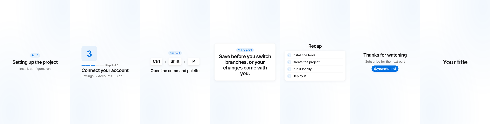

Generate the footage
The catchThis is where the money is, but it's a different job. They make shots from prompts. Your recording still needs an edit.
And open source. Your own AI agent does the cuts, the cleanup and the motion graphics. AeroEdits gives it a real timeline to work on, and you keep the last word.
The market
$3.75B
That's Mordor Intelligence's figure for 2026, heading to $4.99B by 2031.2 Adobe, Apple, Blackmagic and Avid hold the top of the list. It's the high end of the estimates, because nobody agrees on where the category stops.
Same axis, $ billions. Hover a bar for the source.20
US film and video editors earn about as much in wages as the whole world spends on the software. That's 39,400 editors at a $75,420 median, around $3B, before you count a single freelancer.4 AI agents go after that labour line, and that's why this shift is bigger than one more app.
| Tool | Listed price | What you get, what you don't |
|---|---|---|
| Adobe Creative Cloud, all apps | $720/yr | $59.99 a month. Premiere and After Effects together.5 |
| CapCut Pro | €349/yr | Or €34.99 a month.6 |
| DaVinci Resolve Studio | $295 | Paid once. The free edition is excellent, but the AI assistant server is reported as Studio only.78 |
| Descript Creator | $288/yr | $24 a month on the yearly plan, with 800 AI credits a month.9 |
| Premiere Pro alone | $276/yr | $22.99 a month on an annual plan, with no After Effects.5 |
| AeroEdits | $0 | No subscription and no credits. Bring your own agent, and pay for its usage if your plan charges for it. |
The race
2026 is the year this stopped being a demo. Adobe and Blackmagic both opened their editors to AI assistants, and developers are starring open-source editing tools by the tens of thousands.
Two layers
Premiere or Resolve does the cut. After Effects does the motion. Each one takes years to learn, and that skill was the real price of a good video. Now skills and MCP can carry the know-how, so the old apps aren't the only way in.
What we built
It's a native desktop app with a timeline you can open and fix by hand. The agent uses the same actions you do, and everything it does can be undone.



Claude Code, Codex or the Claude app connect through MCP or the aeroedits do command. The app has no chat box of its own.
History stays on disk after you close the app. A whole agent run undoes as one step, and a checkpoint saves before every run.
Our recorder captures screen, camera, mic, system sound, mouse, windows and shortcuts. It never records what you typed, only that you typed.
Local English transcription and a local filler review model. Online steps only run when you allow them. No network port is open.
A preset holds the method and your rules for a kind of video. Approve one real edit and it becomes a saved workflow.
Built-in passes are one undo step each, judgement cuts wait for approval, and nothing exports until you say go.
The receipt
We test this with a script: real recordings, a fresh project and a headless Claude Code run. Then we log the calls, tokens and dollars, so we can tell whether a change really made it better.1
What that price leaves out: transcription and review API costs, and your time watching the result. It's two runs on my recordings with a simulated user, so treat it as a test result and not a guarantee. The later run cost more because it did more: four of its six graphics illustrated the content instead of naming it.
Run 4, 24 Oct: 31 calls, $0.393, with simpler text cards. 114 mouth noises muted, 70.3 s of pauses removed, 12 zooms, 5 chapters.
What's left
The first customer is my own English and Greek channel. It only moves forward when I'd keep the result.
Join
The code is public and you can build it today. Star it, try it on a recording, and open an issue when it gets something wrong. That's how a free editor gets good.